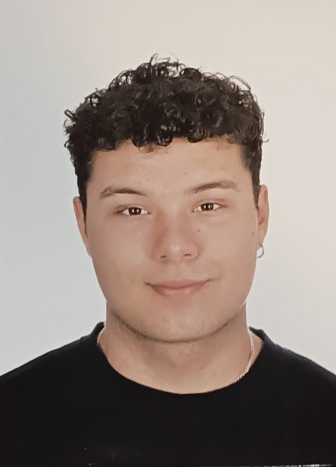

CONTACTO
📞+34 653 28 44 40
📧hugolomodi@gmail.com
ESPECIALIDADES
REDES
SOR
APLICACIONES WEB
INGLES
SKILLS
DISEÑADOR WEBSITE
DISEÑADOR GRAFICO
HOBBIES
Videojuegos
Baloncesto
Música
HUGO LOPEZ DE MOTA DIAZ
DISEÑADOR WEB
SOBRE MI
Técnico en Sistemas Microinformáticos y Redes [ 09/2022 – Actualidad ]Capacidad para: Instalación, configuración y mantenimiento de sistemas microinformáticos aislados o en red, así como redes en entornos reducidos, garantizando su funcionalidad y aplicando los protocolos de calidad en materia de seguridad y el respeto por el medio ambiente.
EDUCACION
2016-2020 E.S.O
IES DUQUE DE RIVAS
2022-2024 F.P.G.M (Sistemas Microinformáticos y Redes)
IES VILLABLANCA
EXPERIENCIA LABORAL
2023-2023 CARREFOUR-REPONEDOR
Mes de agosto completo, ambos jefes encantados.